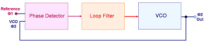

Phase-Locked
Loop (PLL) Devices
A
Phase-Locked Loop (PLL)
device is a
closed-loop
electronic circuit
that controls an oscillator so that it
provides an output signal that maintains a constant phase angle
with respect to a reference signal, which can range from a fraction of a
Hz to many GHz.
It is one of the most widely used linear IC's for communications
applications today, having
the capability to do one or more of the following: 1) compare signal
frequencies; 2) synthesize an output signal that has a frequency that's
equal to that of a reference signal; 3) keep another signal equal in
frequency with the reference signal.
A basic PLL
circuit generally consists of a phase frequency detector, a charge pump,
a loop filter, a voltage-controlled oscillator (VCO), and some form of output. The
oscillator
generates the periodic output signal that needs to be in phase with the
reference signal. If the frequency of this oscillator-generated
signal lags behind that of the reference signal, the
phase
detector
causes the
charge
pump
to drive current into the
loop filter
which changes the oscillator's control voltage in such a way that the
oscillator frequency is increased.
By the same token, the phase detector causes the charge pump
to draw current from the loop filter system to change
the control voltage and slow down the oscillator if its output signal
starts leading the reference signal. The loop filter also removes
jitters from the charge pump to 'smoothen' the control voltage.
The VCO
output stabilizes when it has already attained the same frequency and
phase as the reference signal. In effect, this system
ensures that the oscillator frequency gets 'locked' into the reference
signal frequency.
Depending
on the application,
the useful output derived from the PLL system would
either be the output signal of the voltage-controlled oscillator or
the control voltage to the oscillator.

Figure 1. Simple PLL Block Diagram
PLL devices are used heavily in communications applications, primarily
for keeping a communications signal locked on a given frequency, or for
generating a signal of a given frequency.
For instance, almost all transceivers utilize PLL devices to
synthesize
the stable, high-frequency oscillations needed for radio and wireless
communications. PLL's are also used in the
demodulation
of both AM and FM signals. In
space communications,
PLL devices are employed for coherent carrier tracking and threshold
extension, bit synchronization, and symbol synchronization.
PLL devices are also used in
the recovery of small signals that would otherwise be lost. Clock timing
information from a data stream (such as from a disk drive) may also be
recovered by PLL devices. Other PLL applications include microprocessor
clock multipliers, modems, and various decoding circuits.
HOME
Copyright
©
2005
EESemi.com.
All Rights Reserved.